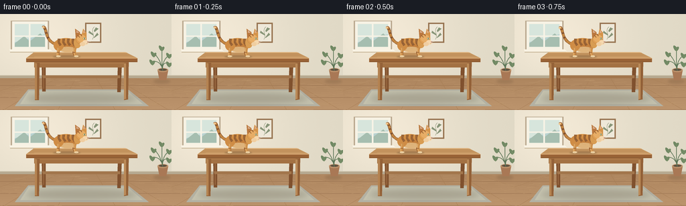
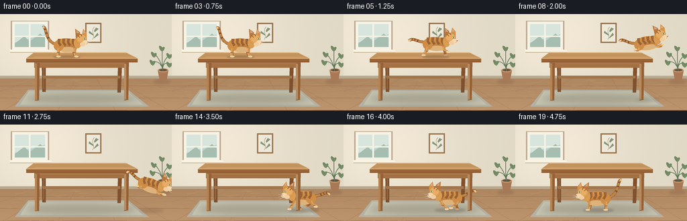

CODING AGENTS AS PIXEL WORLD MODELS
traex/GPT-6.1-Sol · dynamic_spatial_relationship_0010
点击播放 · 原生 RGB 像素
逐轮保存的候选
回放视频、检查图与代码变化。
每份候选均可单独播放。实际图片检查记录在下方工具轨迹中。
候选 01播放与检查图
点击播放 · 原生 RGB 像素


展开代码变化
--- 上一保存版本
+++ 本次保存版本
@@ -0,0 +1,224 @@
+from pathlib import Path
+import math
+import numpy as np
+from PIL import Image, ImageDraw, ImageFilter
+import artifact_io
+
+ROOT=Path(__file__).resolve().parent
+W,H,S=256,144,4
+rng=np.random.default_rng(14)
+
+def xy(points): return [(int(x*S),int(y*S)) for x,y in points]
+def ellipse(draw,box,fill,outline=None,width=1):
+ draw.ellipse(tuple(int(v*S) for v in box),fill=fill,outline=outline,width=max(1,int(width*S)))
+def poly(draw,pts,fill): draw.polygon(xy(pts),fill=fill)
+def line(draw,pts,fill,width=1): draw.line(xy(pts),fill=fill,width=max(1,int(width*S)),joint='curve')
+def curve(p, n=32):
+ p=np.array(p,float); t=np.linspace(0,1,n)[:,None]
+ return ((1-t)**3*p[0]+3*(1-t)**2*t*p[1]+3*(1-t)*t*t*p[2]+t**3*p[3]).tolist()
+def path_curve(draw,p,color,width): line(draw,curve(p),color,width)
+def shadow(im,box,alpha=60,blur=2):
+ layer=Image.new('RGBA',im.size); d=ImageDraw.Draw(layer)
+ ellipse(d,box,(53,35,22,alpha)); layer=layer.filter(ImageFilter.GaussianBlur(blur*S))
+ im.alpha_composite(layer)
+
+def background():
+ yy,xx=np.mgrid[:H*S,:W*S]; x=xx/S;y=yy/S
+ glow=np.exp(-((x-59)/109)**2-((y-31)/84)**2)
+ noise=rng.normal(0,.48,(H*S,W*S))
+ a=np.empty((H*S,W*S,3))
+ for c,(v,g) in enumerate([(224,19),(217,16),(198,16)]): a[:,:,c]=v+g*glow+noise
+ floor=y>=94
+ for c,v in enumerate([173,133,94]): a[:,:,c][floor]=v+15*(y[floor]-94)/50+noise[floor]
+ im=Image.fromarray(np.uint8(np.clip(a,0,255))).convert('RGBA');d=ImageDraw.Draw(im)
+ # Back wall and oak floor, in the soft light from the left window.
+ poly(d,[(0,92),(256,92),(256,96),(0,96)],'#b6a990')
+ line(d,[(0,92),(256,92)],'#c7bda5',1)
+ for p in [107,125,143]: line(d,[(0,p),(256,p)],'#98714f',.55)
+ for xpos in [-80,5,86,172,252,337]: line(d,[(128+(xpos-128)*.35,96),(xpos,144)],'#a77e55',.55)
+ for _ in range(220):
+ x0=rng.uniform(0,256); y0=rng.uniform(97,144)
+ line(d,[(x0,y0),(min(256,x0+rng.uniform(4,24)),y0-.3)],(190,151,109,90),.25)
+ # Window recess with blue daylight and small white-painted mullions.
+ poly(d,[(16,10),(73,10),(73,56),(16,56)],'#baa88f')
+ poly(d,[(18,11),(71,11),(71,53),(18,53)],'#f7f2e4')
+ poly(d,[(22,15),(67,15),(67,49),(22,49)],'#b9d2d2')
+ poly(d,[(22,15),(67,15),(67,30),(22,42)],'#d7e5dc')
+ poly(d,[(22,44),(36,33),(44,41),(60,29),(67,36),(67,49),(22,49)],'#a6beb0')
+ line(d,[(44,14),(44,51)],'#f7f3e6',2.6); line(d,[(20,33),(69,33)],'#f7f3e6',2)
+ poly(d,[(14,53),(75,53),(78,56),(15,56)],'#f9f3e4')
+ line(d,[(15,57),(77,57)],'#c4b294',1)
+ # Understated botanical artwork.
+ poly(d,[(127,13),(151,13),(151,43),(127,43)],'#977451')
+ poly(d,[(129,15),(149,15),(149,41),(129,41)],'#eee8d9')
+ path_curve(d,[(138,38),(143,30),(134,26),(141,19)],'#7d8868',.7)
+ for q in [[(140,25),(143,20),(147,22),(141,27)],[(139,30),(133,25),(132,28),(139,32)],[(140,35),(145,28),(147,31),(140,36)]]:poly(d,q,'#889578')
+ # A soft green woven rug anchors the table and makes the lower position visible.
+ poly(d,[(42,113),(191,113),(222,138),(22,138)],'#b3b1a3')
+ poly(d,[(43,115),(190,115),(213,135),(30,135)],'#c4c1ad')
+ for y0 in np.arange(116,136,1.2):line(d,[(33+(136-y0)*.6,y0),(213-(136-y0)*1.1,y0)],'#bab9a6',.2)
+ # Houseplant in the far right corner.
+ shadow(im,(229,98,254,104),32,1.7);d=ImageDraw.Draw(im)
+ poly(d,[(235,84),(251,84),(248,99),(238,99)],'#a97855')
+ ellipse(d,(235,81,251,87),'#bc916a');ellipse(d,(237,82,249,85),'#5d5040')
+ for end in [(230,59),(242,50),(253,61),(228,71),(253,74)]:
+ path_curve(d,[(243,85),(241,69),end,end],'#5c7657',1)
+ ex,ey=end
+ pts=curve([(ex,ey),(ex-7,ey-8),(ex-6,ey+4),(ex,ey+6)])+curve([(ex,ey+6),(ex+5,ey+2),(ex+4,ey-3),(ex,ey)])
+ poly(d,pts,'#718964');line(d,[(ex,ey),(ex,ey+6)],'#94a078',.4)
+ shadow(im,(41,119,203,134),45,4)
+ return im
+
+
+def table_back(im):
+ d=ImageDraw.Draw(im)
+ # Far legs first: the cat can genuinely move into the space beneath the table.
+ poly(d,[(62,65),(68,65),(68,116),(63,116)],'#80512e')
+ poly(d,[(176,66),(182,66),(180,117),(175,117)],'#80512e')
+ line(d,[(65,68),(65,112)],'#a17147',1)
+ poly(d,[(63,92),(179,92),(179,96),(64,96)],'#a2764c')
+
+def tabletop(im):
+ d=ImageDraw.Draw(im)
+ poly(d,[(51,57),(187,57),(205,66),(39,66)],'#c69660')
+ poly(d,[(51,57),(187,57),(190,58),(50,58)],'#e1b884')
+ for i in range(5):
+ y=58.5+i*1.45
+ line(d,[(50-i*1.8,y),(187+i*2.8,y)],'#b28150',.42)
+ for i in range(25):
+ x=45+i*6
+ line(d,[(x,64),(x+12,64.3)],'#d4a974',.3)
+ poly(d,[(39,66),(205,66),(205,72),(39,72)],'#9a6336')
+ line(d,[(39,66),(205,66)],'#e2b680',1.1)
+ line(d,[(40,71),(204,71)],'#79502f',.6)
+ poly(d,[(51,72),(192,72),(191,80),(51,80)],'#a37143')
+ line(d,[(53,74),(190,74)],'#b98956',.7)
+
+def front_legs(im):
+ d=ImageDraw.Draw(im)
+ poly(d,[(52,73),(59,73),(58,129),(52,129)],'#956238')
+ poly(d,[(52,73),(55,74),(55,128),(52,128)],'#b48351')
+ line(d,[(57,79),(56.3,126)],'#79512f',.45)
+ poly(d,[(185,73),(192,72),(191,128),(185,129)],'#956238')
+ poly(d,[(185,74),(188,74),(188,127),(185,128)],'#ba8a58')
+ line(d,[(190,80),(189,125)],'#79512f',.45)
+
+# Cat coordinates are drawn in a stable local reference frame, then translated,
+# turned and pitched. Each limb follows an explicit animated joint trajectory.
+CW,CH=112,84
+OX,OY=48,40
+catnoise=np.random.default_rng(5).normal(0,1.1,(CH*S,CW*S))
+
+def cat(frame,direction=1,pitch=0,run=False,flight=False):
+ im=Image.new('RGBA',(CW*S,CH*S));d=ImageDraw.Draw(im)
+ def P(p):return [(x+OX,y+OY) for x,y in p]
+ def E(box,col,outline=None,width=.45):ellipse(d,[box[0]+OX,box[1]+OY,box[2]+OX,box[3]+OY],col,outline,width)
+ def L(p,col,width):line(d,P(p),col,width)
+ def C(p,col,width):path_curve(d,P(p),col,width)
+ def F(p,col):poly(d,P(p),col)
+ phase=(frame-3)*1.95
+ # Tail connects smoothly to the haunches.
+ if run or flight:
+ tp=[(-14,-3),(-28,-3),(-34,-14+3*math.sin(phase*.4)),(-39,-8+3*math.sin(phase*.4))]
+ else:tp=[(-15,-2),(-33,-5),(-29,-31),(-35,-27+math.sin(frame*.55))]
+ C(tp,'#88512f',4.3);C(tp,'#c28642',3.4)
+ tc=curve(tp,40)
+ for idx in [13,20,27,34]:L(tc[idx:idx+3],'#805030',3.4)
+ C(tc[-4:],'#f0c68e',3)
+ # Far-side legs.
+ legs=[]
+ for j,(root,offset,far) in enumerate([(-11,math.pi,True),(11,0,True),(-12,0,False),(12,math.pi,False)]):
+ p=phase+offset+(1.2 if far else 0)
+ if flight:
+ footx=root+(-8 if root<0 else 11);footy=7+2*math.sin(phase)
+ jointx=root+(-4 if root<0 else 7);jointy=8
+ elif run:
+ footx=root+9*math.cos(p);footy=17-max(0,math.sin(p))*7
+ jointx=root+5*math.cos(p+0.6);jointy=10
+ else:
+ footx=root+(2 if root>0 else -1);footy=17
+ jointx=root-1;jointy=10
+ legs.append((root,jointx,jointy,footx,footy,far))
+ if far:
+ C([(root,2),(root,8),(jointx,jointy),(footx,footy-1)],'#9e6433',3.9)
+ E((footx-2,footy-2,footx+4,footy+.4),'#c7a375')
+ # Shaded torso with orange fur and a warm cream belly.
+ mask=Image.new('L',im.size);md=ImageDraw.Draw(mask)
+ ellipse(md,(OX-19,OY-11,OX+18,OY+9),255)
+ y,x=np.mgrid[:CH*S,:CW*S];xx=x/S-OX;yy=y/S-OY
+ light=np.clip((yy+10)/21,0,1)
+ aa=np.zeros((CH*S,CW*S,4),dtype=np.uint8)
+ for c,(top,bot) in enumerate([(218,173),(152,101),(76,44)]): aa[:,:,c]=np.clip(top+(bot-top)*light+catnoise,0,255)
+ aa[:,:,3]=np.asarray(mask);im.alpha_composite(Image.fromarray(aa));d=ImageDraw.Draw(im)
+ E((-11,2,15,10),'#deb37b')
+ E((-19,-8,-4,8),'#cf8c45')
+ for x0 in [-11,-4,3,10]:
+ F([(x0-2,-10),(x0+2,-10),(x0+1,-5),(x0+4,-1),(x0+1,1),(x0-2,-4)],'#956034')
+ L([(x0-1,-9),(x0,-6)],'#b67b3d',.5)
+ # Tiny fur strokes hold their texture from frame to frame.
+ for k in range(40):
+ fx=-15+(k*11.73)%29;fy=-6+(k*6.1)%11
+ if (fx/17)**2+(fy/9)**2<.85:L([(fx,fy),(fx+1.1,fy+.25)],'#d49a55',.23)
+ # Foreground legs over the torso.
+ for root,jx,jy,fx,fy,far in legs:
+ if not far:
+ C([(root,3),(root+1,8),(jx,jy),(fx,fy-1)],'#ce914c',4.2)
+ C([(root-.8,4),(root,9),(jx-1,jy),(fx-1,fy-2)],'#e0ab6a',1.3)
+ L([(jx-1,jy),(jx+2,jy+.7)],'#8b5732',1.05)
+ E((fx-2.1,fy-2,fx+4.0,fy+.7),'#f0d5a7')
+ L([(fx+.9,fy-1),(fx+.9,fy)],'#b89368',.35)
+ # Neck and face: clearly feline silhouette, pointed ears, eye and whiskers.
+ E((11,-12,22,4),'#d89c52')
+ E((14,-17,30,-2),'#df9e52','#a4693a',.35)
+ F([(14,-11),(13,-25),(20,-20),(21,-14)],'#b9773d')
+ F([(15,-19),(15,-23),(19,-19)],'#d8aa89')
+ F([(23,-16),(25,-25),(30,-19),(30,-10)],'#d49349')
+ F([(25,-19),(26,-23),(28,-19)],'#ddae90')
+ E((16,-16,29,-5),'#e7ad66')
+ L([(17,-15),(20,-12)],'#8d582f',1.1)
+ L([(21,-17),(23,-14)],'#8d582f',1)
+ E((24,-8,33,-1),'#f5d7ad')
+ E((20,-5,28,1),'#f0cea1')
+ # Eye slit with a vivid tiny catchlight.
+ E((25,-12,29,-8.5),'#f4df9e','#7a572c',.3)
+ E((26.7,-11.7,27.7,-8.8),'#344c3e')
+ E((26.5,-11.2,27.1,-10.6),'#fff9de')
+ F([(31,-6),(33.8,-5.7),(32,-3.8)],'#a26764')
+ L([(31.6,-3.8),(30.5,-2.7),(28.5,-2.8)],'#795846',.45)
+ L([(28.5,-4.2),(37,-6)],'#f4e2c3',.33)
+ L([(28.5,-3),(37,-2.4)],'#f4e2c3',.33)
+ L([(27.5,-1.7),(35.5,1)],'#f4e2c3',.3)
+ if direction==-1: im=im.transpose(Image.Transpose.FLIP_LEFT_RIGHT)
+ if pitch:im=im.rotate(pitch,resample=Image.Resampling.BICUBIC,center=(OX*S if direction==1 else (CW-OX)*S,OY*S))
+ anchor=(OX if direction==1 else CW-OX,OY)
+ return im,anchor
+
+
+def make_frames():
+ bg=background();frames=[]
+ # Body position (x,y), facing, body pitch. Paws start on the tabletop at y=64
+ # and finish on the rug at y=128, directly beneath the same table.
+ positions=[(99,47,1,0),(99,47,1,0),(100,47,1,0),(102,47,1,0),
+ (117,46,1,0),(137,45,1,0),(159,46,1,0),(177,46,1,8),
+ (196,44,1,10),(213,53,1,-12),(221,70,1,-25),(224,91,1,-18),
+ (220,111,1,0),(213,110,-1,0),(196,110,-1,0),(177,110,-1,0),
+ (158,110,-1,0),(141,111,-1,0),(128,111,-1,0),(123,111,-1,0)]
+ for i,(cx,cy,facing,pitch) in enumerate(positions):
+ im=bg.copy();table_back(im)
+ if i>=12:
+ shadow(im,(cx-22,125,cx+24,131),49,1.4)
+ layer,anchor=cat(i,facing,pitch,run=i<19,flight=False)
+ im.alpha_composite(layer,(int((cx-anchor[0])*S),int((cy-anchor[1])*S)))
+ tabletop(im);front_legs(im)
+ else:
+ tabletop(im);front_legs(im)
+ if i<8:shadow(im,(cx-20,62,cx+21,66),57,.9)
+ else:shadow(im,(cx-17,126,cx+19,131),25+(i-8)*4,2)
+ layer,anchor=cat(i,facing,pitch,run=i>=4,flight=8<=i<=11)
+ im.alpha_composite(layer,(int((cx-anchor[0])*S),int((cy-anchor[1])*S)))
+ rgb=im.convert('RGB').resize((W,H),Image.Resampling.LANCZOS)
+ frames.append(np.asarray(rgb,dtype=np.uint8))
+ return np.stack(frames)
+
+if __name__=='__main__':
+ artifact_io.save(make_frames(),ROOT)
可观测工具轨迹
实际执行的命令与返回图片。
命令 1exit 0
/bin/bash -lc 'ls -la && cat prompt.txt && cat GENERATION_RULES.md && cat task_spec.json'
命令 2exit 0
/bin/bash -lc 'cat artifact_io.py'
命令 3exit 0
/bin/bash -lc "cat > generate.py <<'PY'
from pathlib import Path
import math
import numpy as np
from PIL import Image, ImageDraw, ImageFilter
import artifact_io
ROOT=Path(__file__).resolve().parent
W,H,S=256,144,4
rng=np.random.default_rng(14)
def xy(points): return [(int(x*S),int(y*S)) for x,y in points]
def ellipse(draw,box,fill,outline=None,width=1):
draw.ellipse(tuple(int(v*S) for v in box),fill=fill,outline=outline,width=max(1,int(width*S)))
def poly(draw,pts,fill): draw.polygon(xy(pts),fill=fill)
def line(draw,pts,fill,width=1): draw.line(xy(pts),fill=fill,width=max(1,int(width*S)),joint='curve')
def curve(p, n=32):
p=np.array(p,float); t=np.linspace(0,1,n)[:,None]
return ((1-t)**3*p[0]+3*(1-t)**2*t*p[1]+3*(1-t)*t*t*p[2]+t**3*p[3]).tolist()
def path_curve(draw,p,color,width): line(draw,curve(p),color,width)
def shadow(im,box,alpha=60,blur=2):
layer=Image.new('RGBA',im.size); d=ImageDraw.Draw(layer)
ellipse(d,box,(53,35,22,alpha)); layer=layer.filter(ImageFilter.GaussianBlur(blur*S))
im.alpha_composite(layer)
def background():
yy,xx=np.mgrid[:H*S,:W*S]; x=xx/S;y=yy/S
glow=np.exp(-((x-59)/109)**2-((y-31)/84)**2)
noise=rng.normal(0,.48,(H*S,W*S))
a=np.empty((H*S,W*S,3))
for c,(v,g) in enumerate([(224,19),(217,16),(198,16)]): a[:,:,c]=v+g*glow+noise
floor=y>=94
for c,v in enumerate([173,133,94]): a[:,:,c][floor]=v+15*(y[floor]-94)/50+noise[floor]
im=Image.fromarray(np.uint8(np.clip(a,0,255))).convert('RGBA');d=ImageDraw.Draw(im)
# Back wall and oak floor, in the soft light from the left window.
poly(d,[(0,92),(256,92),(256,96),(0,96)],'#b6a990')
line(d,[(0,92),(256,92)],'#c7bda5',1)
for p in [107,125,143]: line(d,[(0,p),(256,p)],'#98714f',.55)
for xpos in [-80,5,86,172,252,337]: line(d,[(128+(xpos-128)*.35,96),(xpos,144)],'#a77e55',.55)
for _ in range(220):
x0=rng.uniform(0,256); y0=rng.uniform(97,144)
line(d,[(x0,y0),(min(256,x0+rng.uniform(4,24)),y0-.3)],(190,151,109,90),.25)
# Window recess with blue daylight and small white-painted mullions.
poly(d,[(16,10),(73,10),(73,56),(16,56)],'#baa88f')
poly(d,[(18,11),(71,11),(71,53),(18,53)],'#f7f2e4')
poly(d,[(22,15),(67,15),(67,49),(22,49)],'#b9d2d2')
poly(d,[(22,15),(67,15),(67,30),(22,42)],'#d7e5dc')
poly(d,[(22,44),(36,33),(44,41),(60,29),(67,36),(67,49),(22,49)],'#a6beb0')
line(d,[(44,14),(44,51)],'#f7f3e6',2.6); line(d,[(20,33),(69,33)],'#f7f3e6',2)
poly(d,[(14,53),(75,53),(78,56),(15,56)],'#f9f3e4')
line(d,[(15,57),(77,57)],'#c4b294',1)
# Understated botanical artwork.
poly(d,[(127,13),(151,13),(151,43),(127,43)],'#977451')
poly(d,[(129,15),(149,15),(149,41),(129,41)],'#eee8d9')
path_curve(d,[(138,38),(143,30),(134,26),(141,19)],'#7d8868',.7)
for q in [[(140,25),(143,20),(147,22),(141,27)],[(139,30),(133,25),(132,28),(139,32)],[(140,35),(145,28),(147,31),(140,36)]]:poly(d,q,'#889578')
# A soft green woven rug anchors the table and makes the lower position visible.
poly(d,[(42,113),(191,113),(222,138),(22,138)],'#b3b1a3')
poly(d,[(43,115),(190,115),(213,135),(30,135)],'#c4c1ad')
for y0 in np.arange(116,136,1.2):line(d,[(33+(136-y0)*.6,y0),(213-(136-y0)*1.1,y0)],'#bab9a6',.2)
# Houseplant in the far right corner.
shadow(im,(229,98,254,104),32,1.7);d=ImageDraw.Draw(im)
poly(d,[(235,84),(251,84),(248,99),(238,99)],'#a97855')
ellipse(d,(235,81,251,87),'#bc916a');ellipse(d,(237,82,249,85),'#5d5040')
for end in [(230,59),(242,50),(253,61),(228,71),(253,74)]:
path_curve(d,[(243,85),(241,69),end,end],'#5c7657',1)
ex,ey=end
pts=curve([(ex,ey),(ex-7,ey-8),(ex-6,ey+4),(ex,ey+6)])+curve([(ex,ey+6),(ex+5,ey+2),(ex+4,ey-3),(ex,ey)])
poly(d,pts,'#718964');line(d,[(ex,ey),(ex,ey+6)],'#94a078',.4)
shadow(im,(41,119,203,134),45,4)
return im
def table_back(im):
d=ImageDraw.Draw(im)
# Far legs first: the cat can genuinely move into the space beneath the table.
poly(d,[(62,65),(68,65),(68,116),(63,116)],'#80512e')
poly(d,[(176,66),(182,66),(180,117),(175,117)],'#80512e')
line(d,[(65,68),(65,112)],'#a17147',1)
poly(d,[(63,92),(179,92),(179,96),(64,96)],'#a2764c')
def tabletop(im):
d=ImageDraw.Draw(im)
poly(d,[(51,57),(187,57),(205,66),(39,66)],'#c69660')
poly(d,[(51,57),(187,57),(190,58),(50,58)],'#e1b884')
for i in range(5):
y=58.5+i*1.45
line(d,[(50-i*1.8,y),(187+i*2.8,y)],'#b28150',.42)
for i in range(25):
x=45+i*6
line(d,[(x,64),(x+12,64.3)],'#d4a974',.3)
poly(d,[(39,66),(205,66),(205,72),(39,72)],'#9a6336')
line(d,[(39,66),(205,66)],'#e2b680',1.1)
line(d,[(40,71),(204,71)],'#79502f',.6)
poly(d,[(51,72),(192,72),(191,80),(51,80)],'#a37143')
line(d,[(53,74),(190,74)],'#b98956',.7)
def front_legs(im):
d=ImageDraw.Draw(im)
poly(d,[(52,73),(59,73),(58,129),(52,129)],'#956238')
poly(d,[(52,73),(55,74),(55,128),(52,128)],'#b48351')
line(d,[(57,79),(56.3,126)],'#79512f',.45)
poly(d,[(185,73),(192,72),(191,128),(185,129)],'#956238')
poly(d,[(185,74),(188,74),(188,127),(185,128)],'#ba8a58')
line(d,[(190,80),(189,125)],'#79512f',.45)
# Cat coordinates are drawn in a stable local reference frame, then translated,
# turned and pitched. Each limb follows an explicit animated joint trajectory.
CW,CH=112,84
OX,OY=48,40
catnoise=np.random.default_rng(5).normal(0,1.1,(CH*S,CW*S))
def cat(frame,direction=1,pitch=0,run=False,flight=False):
im=Image.new('RGBA',(CW*S,CH*S));d=ImageDraw.Draw(im)
def P(p):return [(x+OX,y+OY) for x,y in p]
def E(box,col,outline=None,width=.45):ellipse(d,[box[0]+OX,box[1]+OY,box[2]+OX,box[3]+OY],col,outline,width)
def L(p,col,width):line(d,P(p),col,width)
def C(p,col,width):path_curve(d,P(p),col,width)
def F(p,col):poly(d,P(p),col)
phase=(frame-3)*1.95
# Tail connects smoothly to the haunches.
if run or flight:
tp=[(-14,-3),(-28,-3),(-34,-14+3*math.sin(phase*.4)),(-39,-8+3*math.sin(phase*.4))]
else:tp=[(-15,-2),(-33,-5),(-29,-31),(-35,-27+math.sin(frame*.55))]
C(tp,'#88512f',4.3);C(tp,'#c28642',3.4)
tc=curve(tp,40)
for idx in [13,20,27,34]:L(tc[idx:idx+3],'#805030',3.4)
C(tc[-4:],'#f0c68e',3)
# Far-side legs.
legs=[]
for j,(root,offset,far) in enumerate([(-11,math.pi,True),(11,0,True),(-12,0,False),(12,math.pi,False)]):
p=phase+offset+(1.2 if far else 0)
if flight:
footx=root+(-8 if root<0 else 11);footy=7+2*math.sin(phase)
jointx=root+(-4 if root<0 else 7);jointy=8
elif run:
footx=root+9*math.cos(p);footy=17-max(0,math.sin(p))*7
jointx=root+5*math.cos(p+0.6);jointy=10
else:
footx=root+(2 if root>0 else -1);footy=17
jointx=root-1;jointy=10
legs.append((root,jointx,jointy,footx,footy,far))
if far:
C([(root,2),(root,8),(jointx,jointy),(footx,footy-1)],'#9e6433',3.9)
E((footx-2,footy-2,footx+4,footy+.4),'#c7a375')
# Shaded torso with orange fur and a warm cream belly.
mask=Image.new('L',im.size);md=ImageDraw.Draw(mask)
ellipse(md,(OX-19,OY-11,OX+18,OY+9),255)
y,x=np.mgrid[:CH*S,:CW*S];xx=x/S-OX;yy=y/S-OY
light=np.clip((yy+10)/21,0,1)
aa=np.zeros((CH*S,CW*S,4),dtype=np.uint8)
for c,(top,bot) in enumerate([(218,173),(152,101),(76,44)]): aa[:,:,c]=np.clip(top+(bot-top)*light+catnoise,0,255)
aa[:,:,3]=np.asarray(mask);im.alpha_composite(Image.fromarray(aa));d=ImageDraw.Draw(im)
E((-11,2,15,10),'#deb37b')
E((-19,-8,-4,8),'#cf8c45')
for x0 in [-11,-4,3,10]:
F([(x0-2,-10),(x0+2,-10),(x0+1,-5),(x0+4,-1),(x0+1,1),(x0-2,-4)],'#956034')
L([(x0-1,-9),(x0,-6)],'#b67b3d',.5)
# Tiny fur strokes hold their texture from frame to frame.
for k in range(40):
fx=-15+(k*11.73)%29;fy=-6+(k*6.1)%11
if (fx/17)**2+(fy/9)**2<.85:L([(fx,fy),(fx+1.1,fy+.25)],'#d49a55',.23)
# Foreground legs over the torso.
for root,jx,jy,fx,fy,far in legs:
if not far:
C([(root,3),(root+1,8),(jx,jy),(fx,fy-1)],'#ce914c',4.2)
C([(root-.8,4),(root,9),(jx-1,jy),(fx-1,fy-2)],'#e0ab6a',1.3)
L([(jx-1,jy),(jx+2,jy+.7)],'#8b5732',1.05)
E((fx-2.1,fy-2,fx+4.0,fy+.7),'#f0d5a7')
L([(fx+.9,fy-1),(fx+.9,fy)],'#b89368',.35)
# Neck and face: clearly feline silhouette, pointed ears, eye and whiskers.
E((11,-12,22,4),'#d89c52')
E((14,-17,30,-2),'#df9e52','#a4693a',.35)
F([(14,-11),(13,-25),(20,-20),(21,-14)],'#b9773d')
F([(15,-19),(15,-23),(19,-19)],'#d8aa89')
F([(23,-16),(25,-25),(30,-19),(30,-10)],'#d49349')
F([(25,-19),(26,-23),(28,-19)],'#ddae90')
E((16,-16,29,-5),'#e7ad66')
L([(17,-15),(20,-12)],'#8d582f',1.1)
L([(21,-17),(23,-14)],'#8d582f',1)
E((24,-8,33,-1),'#f5d7ad')
E((20,-5,28,1),'#f0cea1')
# Eye slit with a vivid tiny catchlight.
E((25,-12,29,-8.5),'#f4df9e','#7a572c',.3)
E((26.7,-11.7,27.7,-8.8),'#344c3e')
E((26.5,-11.2,27.1,-10.6),'#fff9de')
F([(31,-6),(33.8,-5.7),(32,-3.8)],'#a26764')
L([(31.6,-3.8),(30.5,-2.7),(28.5,-2.8)],'#795846',.45)
L([(28.5,-4.2),(37,-6)],'#f4e2c3',.33)
L([(28.5,-3),(37,-2.4)],'#f4e2c3',.33)
L([(27.5,-1.7),(35.5,1)],'#f4e2c3',.3)
if direction==-1: im=im.transpose(Image.Transpose.FLIP_LEFT_RIGHT)
if pitch:im=im.rotate(pitch,resample=Image.Resampling.BICUBIC,center=(OX*S if direction==1 else (CW-OX)*S,OY*S))
anchor=(OX if direction==1 else CW-OX,OY)
return im,anchor
def make_frames():
bg=background();frames=[]
# Body position (x,y), facing, body pitch. Paws start on the tabletop at y=64
# and finish on the rug at y=128, directly beneath the same table.
positions=[(99,47,1,0),(99,47,1,0),(100,47,1,0),(102,47,1,0),
(117,46,1,0),(137,45,1,0),(159,46,1,0),(177,46,1,8),
(196,44,1,10),(213,53,1,-12),(221,70,1,-25),(224,91,1,-18),
(220,111,1,0),(213,110,-1,0),(196,110,-1,0),(177,110,-1,0),
(158,110,-1,0),(141,111,-1,0),(128,111,-1,0),(123,111,-1,0)]
for i,(cx,cy,facing,pitch) in enumerate(positions):
im=bg.copy();table_back(im)
if i>=12:
shadow(im,(cx-22,125,cx+24,131),49,1.4)
layer,anchor=cat(i,facing,pitch,run=i<19,flight=False)
im.alpha_composite(layer,(int((cx-anchor[0])*S),int((cy-anchor[1])*S)))
tabletop(im);front_legs(im)
else:
tabletop(im);front_legs(im)
if i<8:shadow(im,(cx-20,62,cx+21,66),57,.9)
else:shadow(im,(cx-17,126,cx+19,131),25+(i-8)*4,2)
layer,anchor=cat(i,facing,pitch,run=i>=4,flight=8<=i<=11)
im.alpha_composite(layer,(int((cx-anchor[0])*S),int((cy-anchor[1])*S)))
rgb=im.convert('RGB').resize((W,H),Image.Resampling.LANCZOS)
frames.append(np.asarray(rgb,dtype=np.uint8))
return np.stack(frames)
if __name__=='__main__':
artifact_io.save(make_frames(),ROOT)
PY
python generate.py"视觉工具实际返回图片 1

保存候选 1 份；完成命令 3 次；可验证图片返回 1 张。原始 API 响应与完整日志保留在本地。